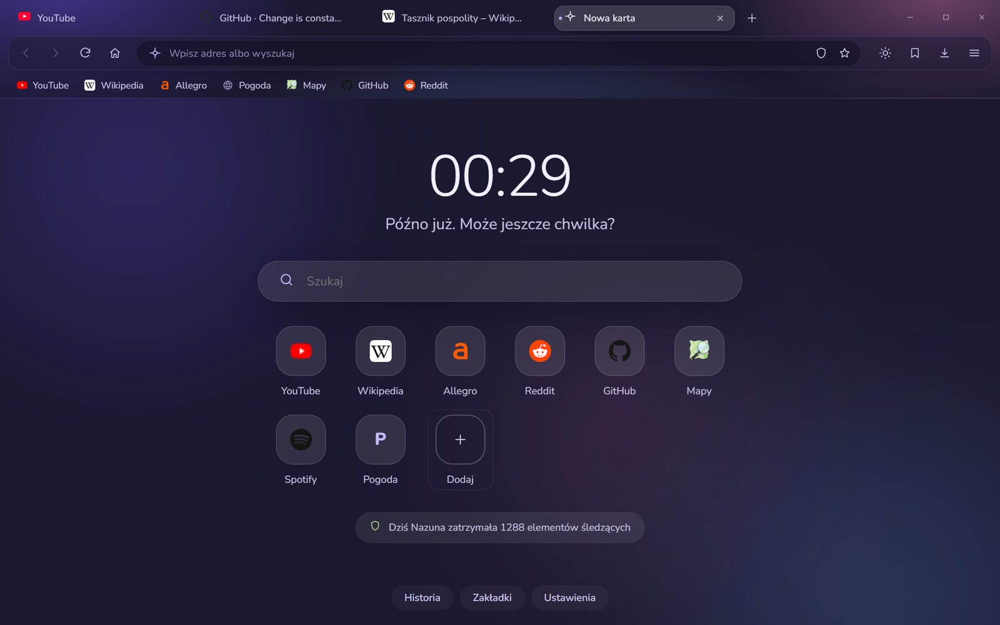
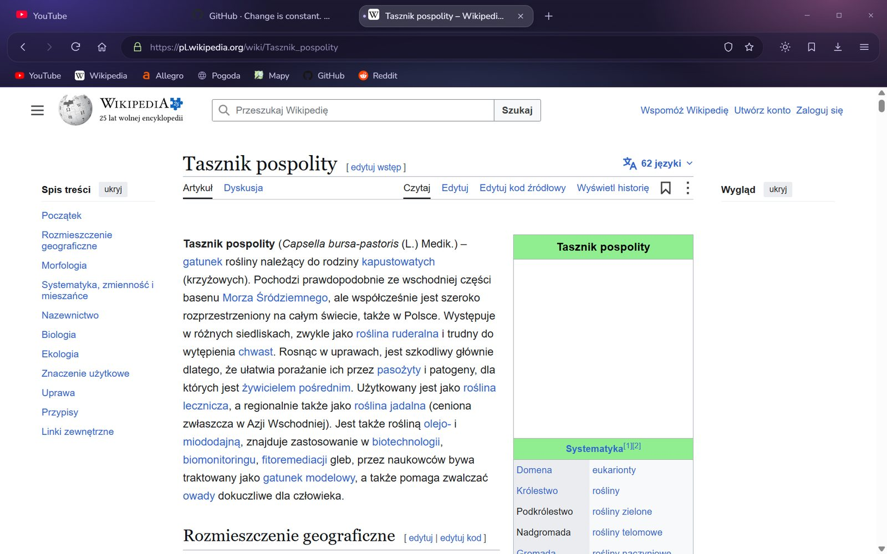
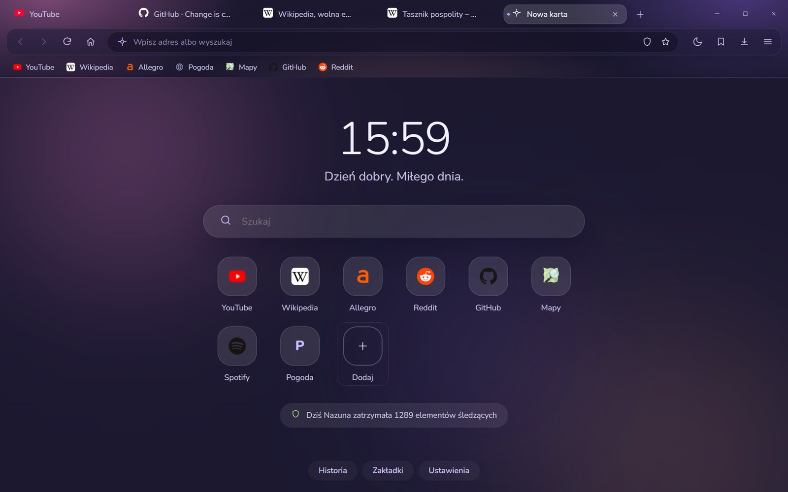
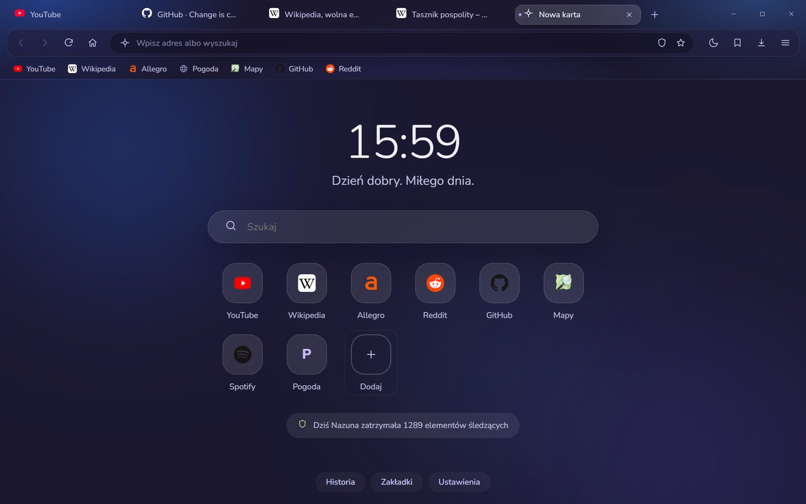
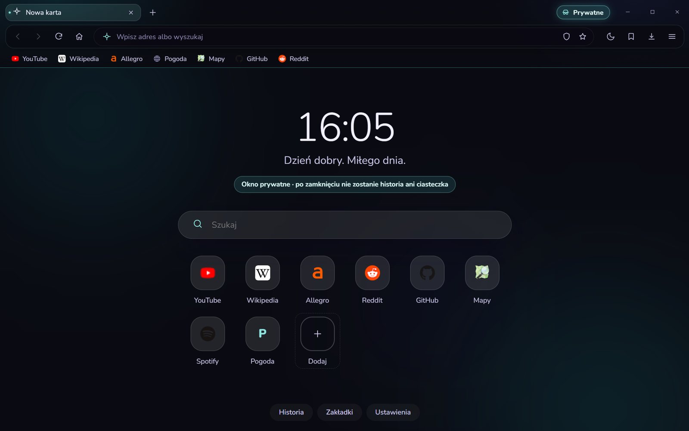

Nazuna w Lawendowej mgle.
Miękkie plamy koloru, pasek jak matowe szkło i nowa karta, na którą chce się patrzeć.

Wybierz, w czym Ci dobrze
Każdy wygląd zmienia całą przeglądarkę: pasek, nową kartę, ustawienia i wszystkie strony Nazuny. Kliknij, żeby przymierzyć.
Japoński ogród za dnia i nocą
Za dnia kremowy papier z pastelową sakurą, nocą głęboka czerń i świecące różowe drzewo. Pora zmienia się sama razem z przyciskiem słońca i księżyca albo na stałe w ustawieniach.
- Logo Nazuny z pieczęcią 薺, tak po japońsku pisze się "nazuna"
- Dawna japońska nazwa miesiąca, np. 霜月 · shimotsuki, miesiąc szronu
- Powitanie po japońsku według pory dnia: こんばんは · konbanwa
- Okno prywatne zostaje turkusowe, żeby od razu było widać różnicę
Spokojny start każdej karty
Zamiast pustej strony: zegar, powitanie dopasowane do pory dnia i Twoje ulubione strony pod ręką.
Zegar i powitanie
Rano "Dzień dobry", wieczorem "Dobry wieczór". W Washi jeszcze po japońsku.
Licznik ochrony
Widzisz, ile reklam i elementów śledzących Nazuna zatrzymała dzisiaj. Liczy tylko liczbę, nie zapisuje adresów.
Słońce i księżyc
Jeden przycisk na pasku przełącza strony między jasnym a ciemnym. W Washi zmienia też porę dnia.
Spokojnie nad każdą stroną
Karty jak zaokrąglone pigułki i czytelny pasek adresu, bez zbędnych przycisków.
- Zakładki na pasku z ikonami stron
- Tarcza blokera zawsze pod ręką
- Nowe karty delikatnie "rozkwitają" przy otwieraniu

Kilka kroków i gotowe
Na powitanie Nazuna pyta o wygląd, pomaga zabrać zakładki z poprzedniej przeglądarki i pokazuje, jak Cię chroni. Wszystko da się później zmienić w ustawieniach.
- Lawendowa mgła, Washi albo Klasyczny, z prawdziwym podglądem
- Zakładki z Chrome, Edge, Brave, Opery i Firefoksa jednym kliknięciem
- Ekran powitalny można przywołać z menu

Trzy kolory mgły
W Lawendowej mgle wybierzesz zestaw kolorów tła. Zmiana działa od razu, w całej przeglądarce.


Noc i turkus
Okno prywatne ma własny charakter w każdym wyglądzie, więc od razu wiesz, gdzie jesteś.
- Po zamknięciu nie zostaje historia ani ciasteczka
- Pobrane pliki nie trafiają na listę
- Nic nie jest zapisywane na dysku

Każdy wygląd w każdym zakątku
Ustawienia, historia i strona "O Nazunie" w różnych wyglądach. Kliknij, żeby powiększyć.
Gotowa, kiedy Ty jesteś
Bloker reklam, osobne ciasteczka dla każdej strony i ostrzeżenia przed wirusami i wyłudzaniem haseł działają od pierwszej minuty. Bez AI, bez zakładania konta.
Pobierz Nazunę